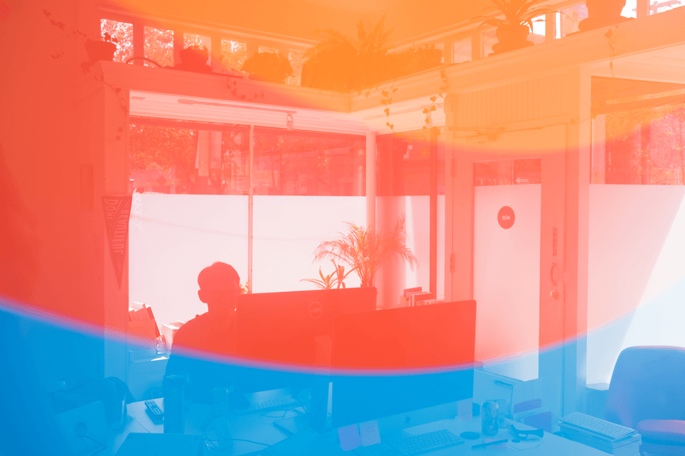
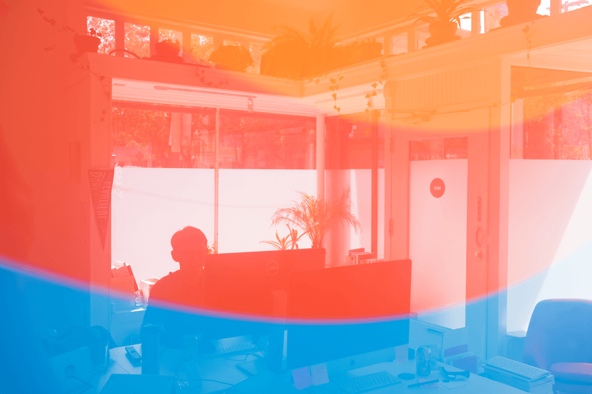

Why are you a designer?
Like most immigrant children, I was expected to be a doctor or a lawyer. In my teenage rebellion, I decided instead to throw myself into the world of literature, philosophy and art. I read everything from Ayn Rand to Albert Camus, made art, and debated politics with the theatre kids.
When the time for college came, I decided to follow the footsteps of my literary heroes by becoming a capitalist and an artist. The latter never happened (though not for lack of trying), but I did end up going to business school.
Once there, I tried to make good on becoming a capitalist by founding a startup. We lived like cockroaches: sleeping in an unheated basement, working into wee hours of morning, eating instant noodles. For a while, we had great traction, but eventually we folded the company as our life goals diverged.
Through this experience, I developed a real taste for end to end product development that has shaped my practice of design to this day. I believe that the best products are made by people who are willing and able to work at whatever level necessary to iterate towards a better solution. Good design starts at the codebase and permeates all the way to sales and customer support.
What areas of design are you interested in?
As our work, our banks, our food, our relationships become increasingly governed by algorithms, their behaviours also become more opaque and unpredictible.
Our mammal brains have hard time keeping up with the speed and magnitude of these kinds of movements. We need tools to extend our abilities to see, interact with and act on these systems.
Thankfully, many brillant people are already working in this area, presenting brillant talks, papers, demos, books and prototypes that offer potential solutions. My goal is to turn these ideas into useful products for millions for people.
Ok but what can you do? Like, specifically?
-
Interaction design
I do this for many hours every day.
-
Information architecture
I also do this for many hours every day.
-
Prototyping
Principle or Framer, depending on the required fidelity.
-
Visual design
I don't do branding, but can still pull off very polished screens.
-
Animation
After Effects → Lottie is my usual workflow.
-
User research
I've done this a lot in the past. Less now due to the NDA nature of projects I work on.
Design
-
CSS, Less, Sass
Mostly the vanilla stuff. Recently got into pre-processors and loving it.
-
JavaScript, JQuery, Node.js
Mostly the former two. Baby steps with the latter.
-
React
Built a simple site with it to get better.
-
Ruby on Rails
Friend and I built a project with Rails. Actively trying to get better at this.
Code
-
Lead generation
Generated thousands of qualified leads through scripting and outsourcing.
-
Drip campaigns
Sent upwards of a thousand emails. Reply rate at ~10%.
-
Closing SaaS deals
Sales
Who are you outside of work?
I’m into outdoorsy stuff. I bike everyday and try to rock climb a few times a week (Mission Cliffs and Dogpatch Boulders!). When I get the chance, I also love to hike.
I’m also a pop culture nerd. I love talking about movies, boardgames, TV, video games, and all forms of narrative media. I'm particularly interested in the intersection of different media, alternate formats for fiction, and generative stories.
I can also be a bit of a homebody. I tend a beautiful vegetable garden with which I make delicious dinners for my wonderful roommmates.